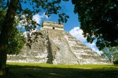
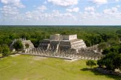
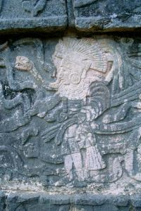
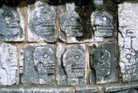
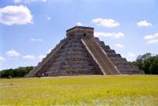

|
Lundi 12 novembre
Autant se débarraser des visites des vieilles pierres tout de suite. Enfin,
je veux dire, on est tellement impatients, on piaffe tellement, qu'on ne peut
s'empêcher d'enchaîner Uxmal avec Chichen Itza, l'autre site important
du Yucatan. Le bus traverse des paysages encore plus plats mais cette fois-ci,
il n'y a pas de touristes, c'est quand même mieux. Arrêtes fréquents, vitesse
réduite, le tout dans un bus climatisé, un peu trop d'ailleurs, on commence
à se geler. Pour se réchauffer, on achète de petits amuse-bouche qui ressemblent
à des tacos à un monsieur à chapeau qui fait trois ou quatre fois l'aller et
retour dans le bus avec sa grande bassine pleine de ces tacos.
On arrive, il est presque 10H00 et il y a déjà des bus entiers de voyageurs
organisés qui attendent à l'entrée! Damned! On rentre et on se retrouve face
à une pyramide. Je commets la grossièreté de trouver que ça ressemble un peu
à Uxmal cette pyramide. Mais ça, c'est parce que j'ai la grossièreté des gens
incultes. Si j'étais un peu plus cultivé et observateur, je verrais de suite
la différence: l'apport de l'architecture toltèque, suis-je sot. Pourtant on
reconnait aisément l'architecture toltèque par "un soubassement incliné des
temples. Les bases des monuments mayas étaient droites" dixit le routard. Et
puis, les mayas utilisaient des formes géométriques très symbolisées. De l'abstrait
oval qui représente une tête au segment courbé qui représente un serpent. Pas
facile de tout reconnaître. Les guides qu'on croise me font d'ailleurs marrer
avec leurs explications. "13 portes, 13 comme le calendrier lunaire" ou alors
martien, je ne sais plus trop. La vérité, à mon avis, c'est qu'on ne sait pas
grand chose de ces civilisations qui, bien qu'avancées sur beaucoup de points,
ne connaissaient pas l'écriture... Forcément, c'est moins facile pour laisser
des explications précises.
Pour en revenir à nos problèmes d'architecture, l'art toltèque est beaucoup
plus concret. Et c'est bien plus poilant de découvrir sur les murs ou dans les
fresques des joueurs de balle ou encore des serpents, des jaguars, des aigles...
et des crânes. Car les toltèques étaient des barbares venus du nord et qui avaient
un petit penchant pour les sacrifices humains. Du coup, lors d'un partie de
pelote, le capitaine de l'équipe perdante était décapité. Et cela ne s'arrêtera
pas là puisque les suivants dans l'histoire, les aztèques, vont exceller dans
le domaine. D'ailleurs, les proportions qu'a pris le sacrifice humain a sans
doute été à l'origine de l'exode des mayas vers le Guatemala.
Mardi 13 novembre
Aujourd'hui, c'est l'anniversaire de Marion. "Qu'est-ce qui te ferait plaisir
pour ton anniversaire?" "Un hamac!" Je ne sais pas d'où cela vient, peut-être
a-t-elle été enlevée petite par un hamac ou alors vient-elle d'une planète alien
où les habitants sont des hamacs. Je ne sais pas. En tout cas, elle a un problème
avec ça, et on se retrouve à acheter des hamacs un peu partout autour du monde.
On part donc à pied jusqu'au marché de Merida à quelques rues de notre hôtel.
Le marché a l'air fort animé mais on verra ce soir. Du marché, on prend un minibus
camionette, un collectivos, qui nous emmène à Tixkokob. C'est là que
sont fabriqués tous les hamacs vendus à Merida et ça doit faire un paquet vu
le nombre de vendeurs ambulants qui déambulent dans les rues (et nous parlent
en anglais d'ailleurs, ce qui nous énerve un peu). Il paraît que ce n'est pas
touristique. C'est vrai à partir du moment où on considère qu'iln'y a pas de
touristes. Mais cela ne nous empêche pas d'être accueillis comme tels. Dès la
descente du bus, on se fait choper par un gars qui nous emmène dans la maison
derrière la boulangerie du village. Il nous montre comment sont faits les hamacs,
Marion en tisse même un bout. Et puis on les essaie, il nous explique toutes
les différences, il faut quinze jours pour en faire un. Mais on va encore un
peu réfléchir, c'est quand même une somme importante pour nous, pas loin de
400 pesos pour un hamac classique taille familiale et un autre qui est en fait
un fauteuil suspendu. Ca fait quelque chose comme 320 FF...
On va manger du poulet, délicieux, grillé au feu de bois. On s'en lèche les
doigts.
On suit ensuite un deuxième gars dans ce village pas touristique, qui nous
explique que le premier gars (celui de la boulangerie) ne fait qu'acheter et
revendre. Il oublie de nous dire que lui va sans doute avoir une commision pour
nous avoir conduits chez "sa cousine" qui, elle, les fabrique. On entre donc
chez la dame. La maison est plutôt belle même si elle n'a rien à voir avec celle
de la boulangerie qui était carrément chouette. Il y a plein de coton partout
et la dame nous explique que ce sont sont des familles qui fabriquent les hamacs
dans leur maison. Elle, elle doit organiser tout cela, on suppose. Il est vrai
que nous avons aperçu des métiers à tisser dans de nombreuses maisons du village.
Bref, on conclu l'affaire après avoir un peu négocié. Je pense que les deux
parties y ont trouvé leur compte. Marion est folle de joie, alors moi aussi.
Même si le mystère de cette passion pour les hamacs reste total...
De retour à Merida, on fait quelques courses au marché et à l'épicerie. Pina
colada (un litre...), gâteaux apéritifs, chips, olives, mayo, radis, avocat,
tomates et concombres. On a décidé de fêter ça sur la terrasse de notre hôtel.
Ca fait maintenant dix mois que l'on mange au resto, alors pour marquer le coup,
ce soir on reste tranquille tous les deux... Santé!
Suite du voyage : Isla Mujeres
|

Mexique
Chichen Itza
|

Mexique
Chichen Itza
|

Mexique
Chichen Itza
|

Mexique
Chichen Itza
|

Mexique
Chichen Itza
|
|
|